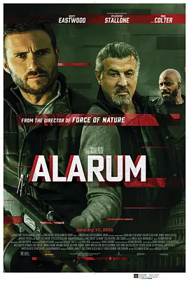

3.9
警报战
Alarum
2025
美国
评分 3.9
导演:
麦克·鲍力施
演员:
西尔维斯特·史泰龙 / 斯科特·伊斯特伍德 / 薇拉·菲茨杰拉德 / 麦克·柯尔特 / D·W·莫菲特
类型:
动作,惊悚,犯罪
剧情简介
偏远山林深处的小木屋本应是一对新婚夫妻的避风港，然而夜色刚刚落下，四周便开始弥漫不安的气息。灯光透过木窗洒在地板上，形成温暖却脆弱的色块，而屋内的两人——曾经的情报人员，如今的逃亡夫妻——正谨慎地整理着有限的物资。他们的动作干脆而默契，却始终带着戒备，仿佛随时可能听见窗外的落叶声变成脚步声。森林的寂静很快被破坏。无人机飞过树梢，闪烁的红点扫过小屋，紧接着远处传来微弱爆裂声。夫妻俩瞬间进入战斗状态，关灯、拉起窗帘、迅速布置反侦测装置，他们曾经仕途辉煌，如今只能靠本能与经验苟延残喘。被盗硬盘是所有组织都在寻找的关键物件，里面的内容足以动摇多个情报体系，所以他们的头顶不仅悬着悬赏，更悬着真相。木屋外，黑夜被暗杀小队的瞄准镜一点点拆解。树影摇晃之间，敌人悄无声息地逼近。屋内气氛紧绷得像随时会断裂的绳索，史泰龙饰演的老练特工用低沉声音分配任务，一边装填弹匣，一边在破旧的地图上标出可能的撤离路线。年轻的丈夫则利用卫星干扰器试图切断来袭者的通讯。他们早已明白，这场战斗没有退路。第一波袭击骤然爆发，枪声撕裂空气，木屑四散，夜空被火光映得闪亮。夫妻俩在屋内穿梭，借助熟悉的地形与预先布置的陷阱进行反击。敌人来自不同情报机构，各自目的不同，行动混乱却致命，使战局更加难以预测。森林被浓烟与火光染成诡异的色调，仿佛整片山林都被卷入危险。随着包围圈不断收紧，二人试图逃向更深处的山谷，却发现这场冲突背后的阴影远比他们想象的大。硬盘内容牵涉的阴谋逐渐浮现，而敌方的步步追击，也逼迫他们必须面对最终抉择：继续逃亡，还是揭开真相。影片节奏紧凑，充满爆破与追击的压迫感，将两位特工的残余信念推向极限，也让山林中的每一次呼吸都如临深渊。